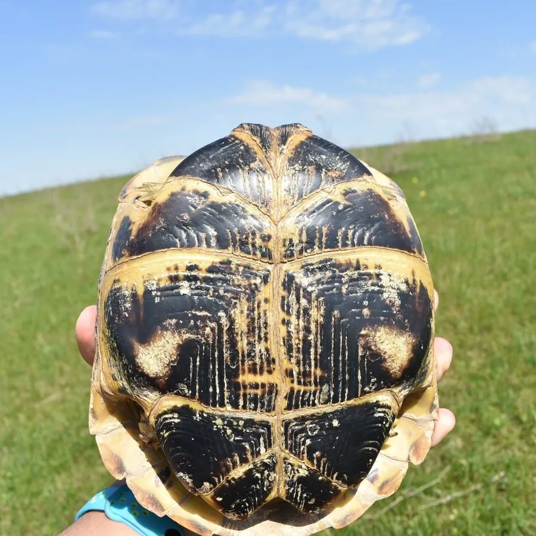

爬行动物 · 动物界
四爪陆龟 Testudo horsfieldii

中亚干旱草原上的小型陆龟，四肢各仅四爪、背甲扁平呈土黄，一年中大半时间在洞穴中休眠，中国仅新疆霍城有分布。
- 分类
- 门脊索动物门纲爬行纲目龟鳖目科陆龟科属陆龟属
- 栖息环境
- 干旱草原、半荒漠、黄土丘陵与山前砾石坡地
- 地理分布
- 中亚各国至中国新疆霍城、哈萨克斯坦、乌兹别克斯坦、伊朗北部
- 保护级别
- IUCN 易危（VU）；中国国家一级保护动物；CITES 附录Ⅱ
物种志
四爪陆龟是体型较小的陆龟，背甲长 13–25 厘米，体重 0.5–2 千克。背甲扁平、略呈圆形，盾片中央有黄褐色与黑色交错的斑纹，边缘略外翻；腹甲黄色，具黑色斑块。四肢粗壮呈圆柱状，前肢覆盖大鳞片，最显著的特征是四肢各只有四枚爪，不同于多数陆龟的五爪，因此得名“四爪陆龟”。
它们分布于中亚的干旱草原与半荒漠，从里海东岸到中国新疆西北部，栖息于黄土丘陵、山前草原与砾石坡地。四爪陆龟是穴居性最强的陆龟之一，会挖掘深达一米的斜洞躲避夏季高温与冬季严寒，一年中休眠时间可长达八九个月，仅在春季和初夏活动。食性以草本植物为主，取食叶片、花、果实与嫩茎，偶尔吃昆虫与蜗牛。春季交配，每窝 2–5 枚卵，孵化期约 60–90 天。因宠物贸易与栖息地开垦，其种群持续下降。
形态与习性
- 背甲长约 13–25 cm，体重 0.5–2 kg
- 食性草本植物叶片、花、果实与嫩茎，偶食昆虫
- 繁殖春季交配，每窝 2–5 枚卵，孵化约 60–90 天
- 四肢特征四肢各仅四枚爪，为区别于其他陆龟的关键特征
- 休眠习性夏季与冬季均休眠，一年中活动时间仅三四个月
- 洞穴可挖掘深约 1 m 的斜洞，洞口常朝向阳光
- 寿命约 40–60 年
趣味知识
- 四爪陆龟的四肢各只有四个爪，这在陆龟中相当少见。
- 它一年里大半时间都在洞里休眠，只有春天短暂出来活动、繁殖。
- 在中国，野生四爪陆龟仅分布在新疆霍城一带的草原上。